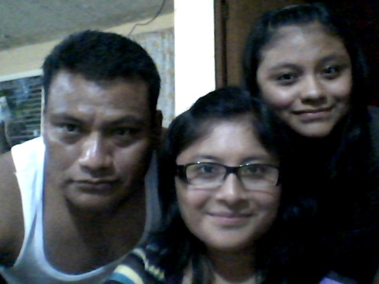
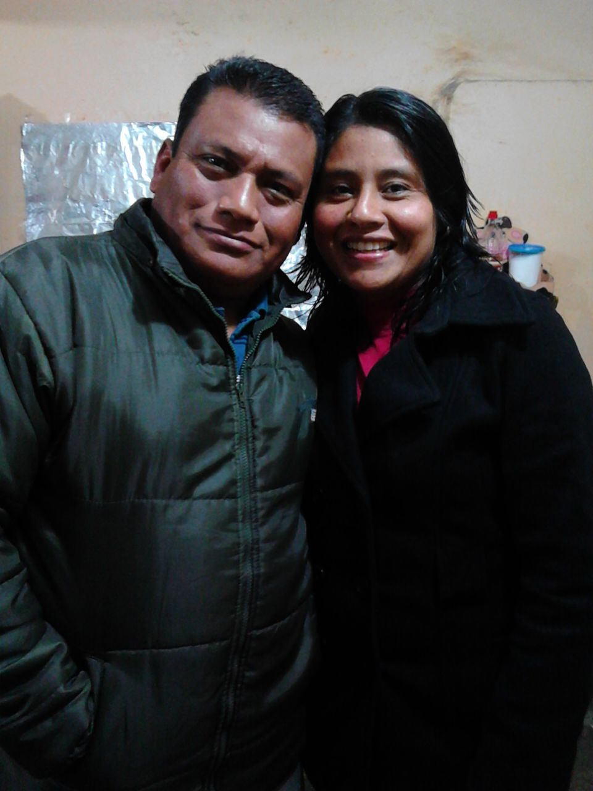
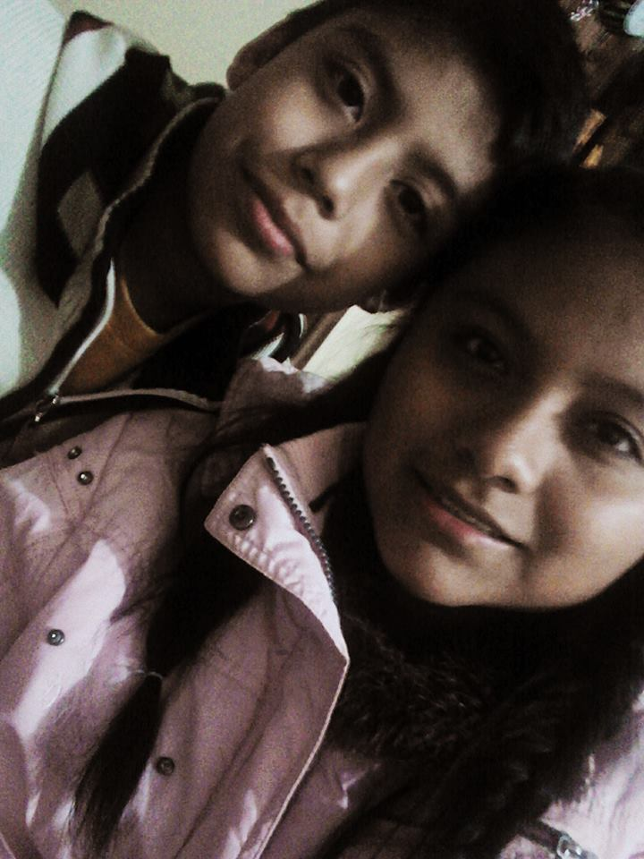
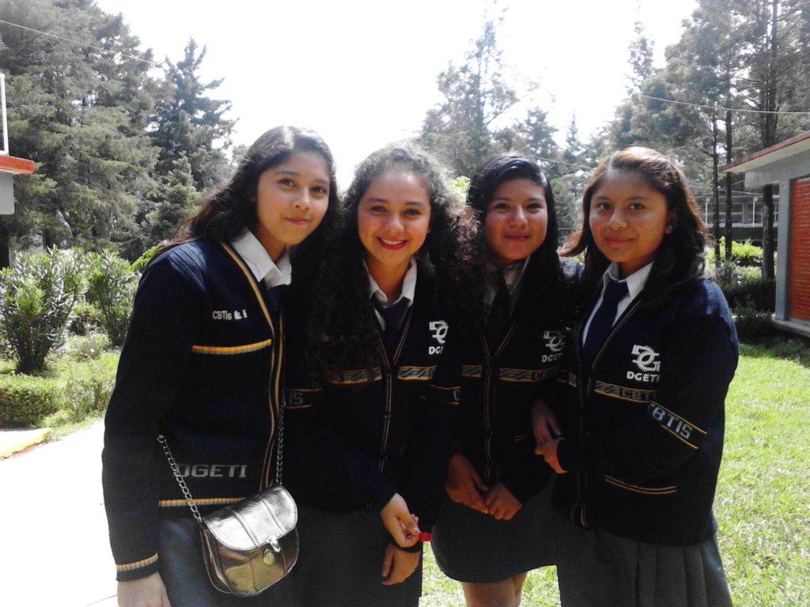
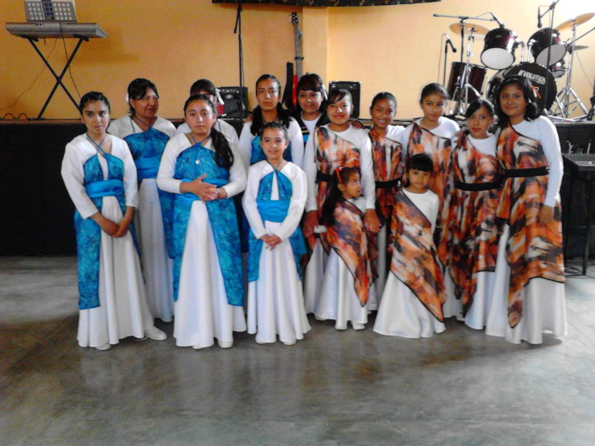
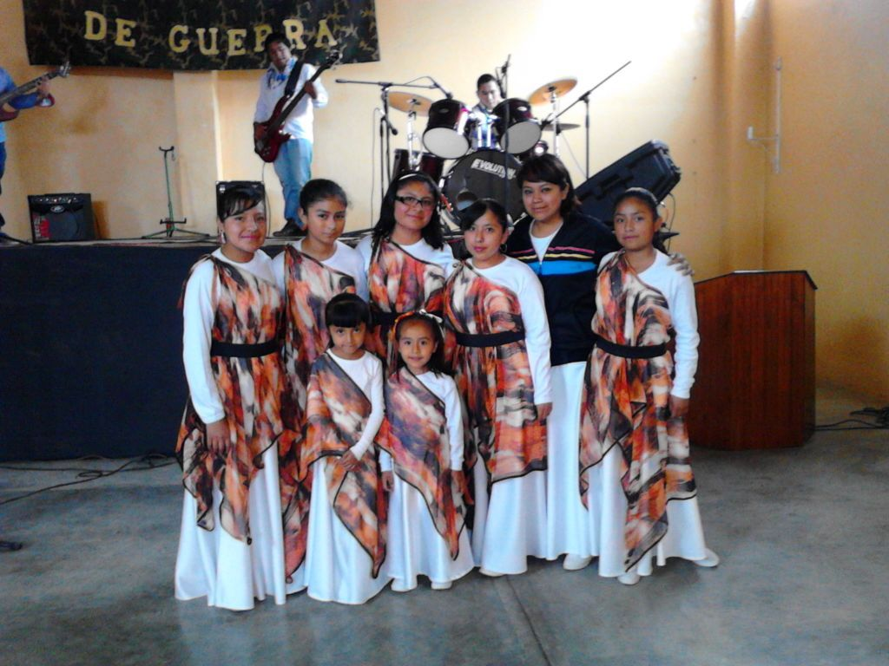
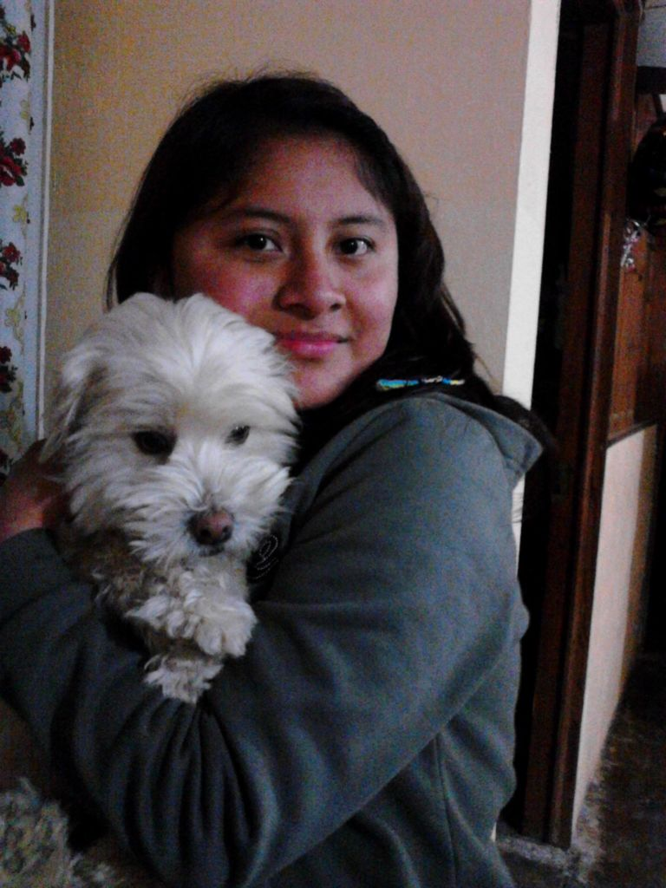

Datos
Mi nombre es Jael Cruz Cruz nací el 29 de Septiempre de 1998 en Tulancingo,Hidalgo. Mis papás son David Cruz Ramírez y María A. Cruz Martinez, y mis hermanos son Eunice Cruz Cruz y David Natán Cruz Cruz.
Mi tipo de sangre es: ORH+.


Jael Cruz Cruz
Estudios
El preescolar lo curse en la escuela "Juan Galindo" donde solo curse 2° y 3°.
1° y 2° de primaria los curse en el Instituto de Inglés Cri-Cri, y 3° a 6° fui a la primaria "Alberto Jimenez Valderrabano".
La secundaria la curse en "Niños Heroes de Chapultepec".

Actualmente estoy cursando el CBTis en la carrera de Programación en 4° semestre grupo "E".
Jael Cruz Cruz
Logros
Mis logros tal vez no han sido tan grandes pero yo me siento orgullosa de esos logros asi como terminar varias etapas de estudio. Un logro que me ha gustado es ir a enseñar panderos a otra iglesia y ministrar juntas, es algo que gracias a Dios he logrado. 
Jael Cruz Cruz
Mascotas
Tengo como mascota un perro llamado Hachi, cuando me lo dieron tenía un mes y medio.
El es mi primer perro me lo dieron por mi cumpleaños, le puse ese nombre por una película que se llama "Siempre a tu lado".
Jael Cruz Cruz